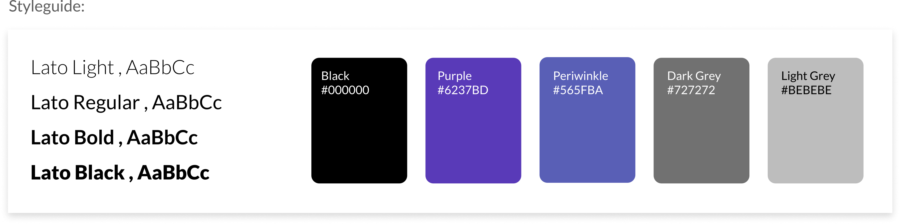
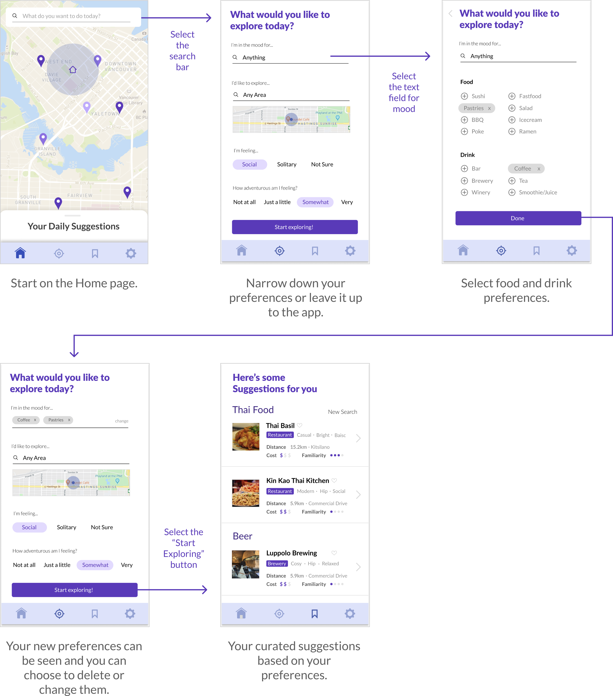

We surveyed 73 people to gain insights about their experiences with their own neightbourhoodsand how they explore.From this data, we discoverd key motivations and pain points.
“Discovering new restaurants is something that I care about finding.”
“It's always nice to experience new things in even familiar cities. It's like traveling to a new place alltogether.
“It’s always exciting finding somewhere new that you enjoy. But I still love going back to places I’ve visited before!”
“When you are local and have been living in your city all your life, you're less likely to explore and just stick to regions you are comfortable with.”
“It’s hard to find places that live up to the standards of your favourite spots.”
“I’ve feel like I’ve seen and done it all.”
Using our research, we started brainstorming wireframes and wireflows to design user tasks that align with our user goals.
An example of an initial wireflow for the search/discover feature:span>
Using our grey-box wireflows, we created higher mock-up fedility prototypes to refine the interactions. We also created a styleguide to use for our mockup.
An example of an updated wireflow for the search/discover feature:
From our updated wireflows, we built the user tasks into an interactive mockup that we could test interactions with.
We tested 7 users using our interactive mockup with a list of set user tasks. Through our observations and conversations, we discovered the following paint points:
View our final product using our interactive mockup.